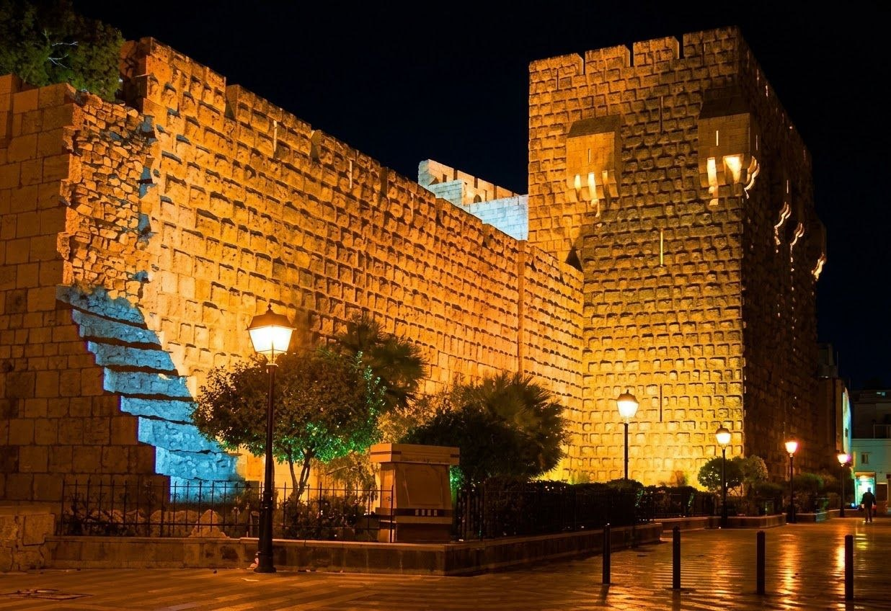
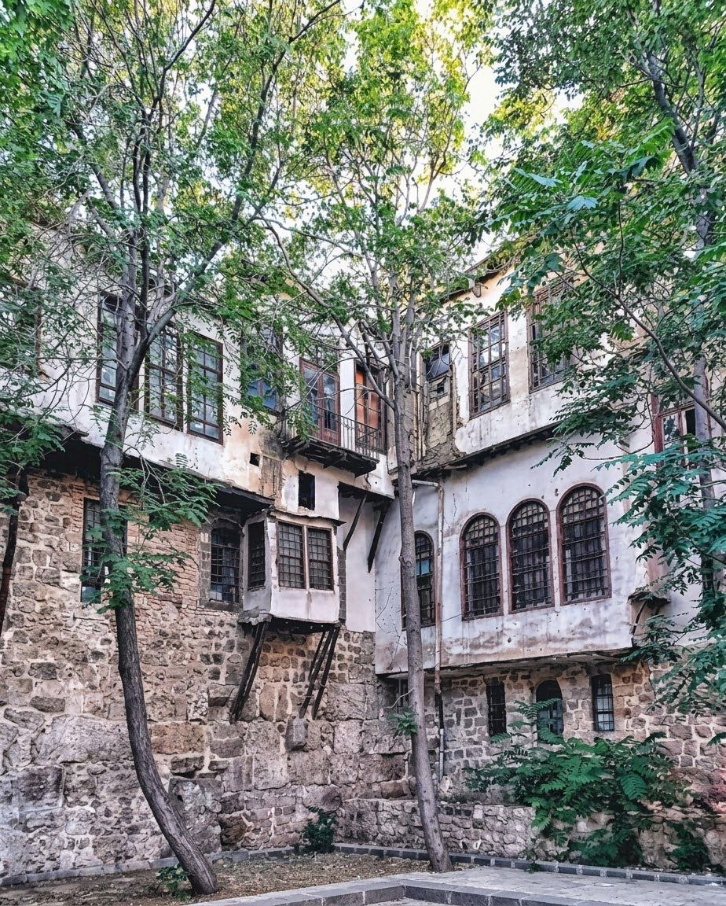
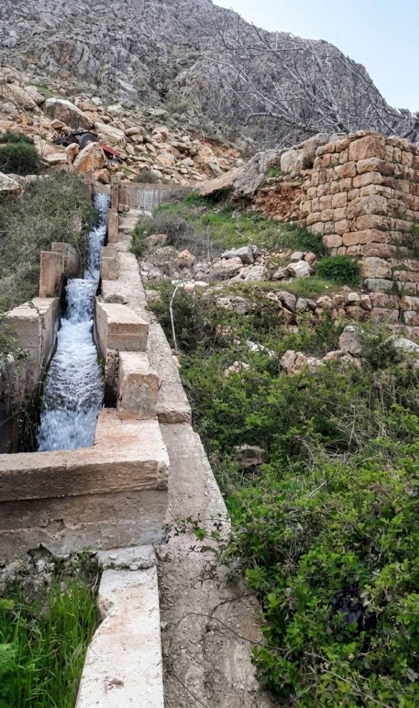
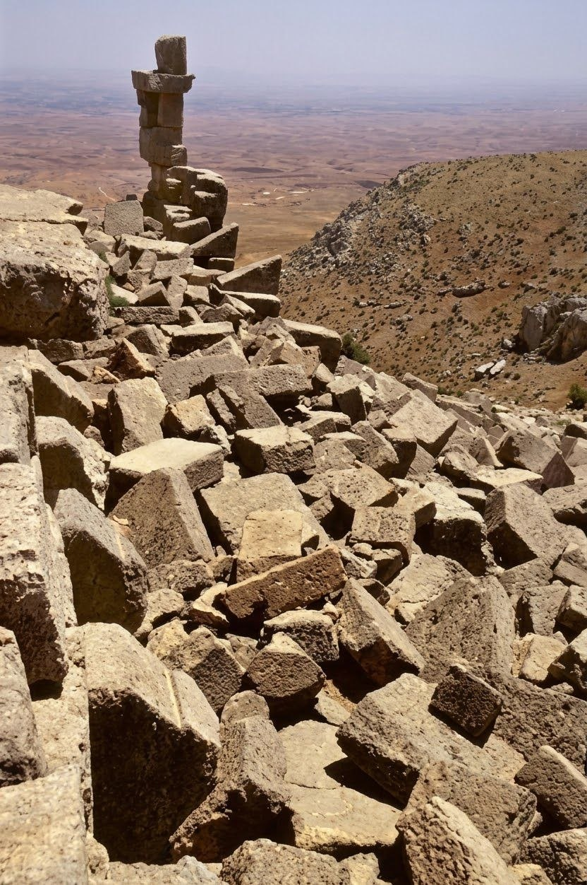

تمتاز عالمياً ببنائها على أرض المدينة المنبسطة لا فوق تل. أُعيد تشييدها بشكلها الضخم في العهد الأيوبي لصد الصليبيين والمغول، وتضم 12 برجاً وخندقاً مائياً من نهر بردى.

طوق دفاعي واحد متكامل حَمى أقدم عاصمة مأهولة عبر التاريخ. خَططه الرومان بشكل مستطيل وله 7 أبواب ارتبطت بالكواكب، ومن أشهرها صموداً "باب شرقي" و"باب توما".

حصن جبلي شاهق (ارتفاع 1428م) على سفوح جبل الشيخ. تعود جذورها للفترة اليونانية وأعاد الفاطميون بناءها عام 1015م، لتصبح عاصمة إمارة الجنادلة المحلية لقرنين من الزمن.

حصن عسكري متقدم يقع في منطقة القلمون الاستراتيجية (شمال دمشق بـ 88 كم). بنيت لحماية وتأمين قوافل التجارة والحج، ويخلد متحفها الأثري الحالي إرثها الدفاعي بعد اندثار مبناها.